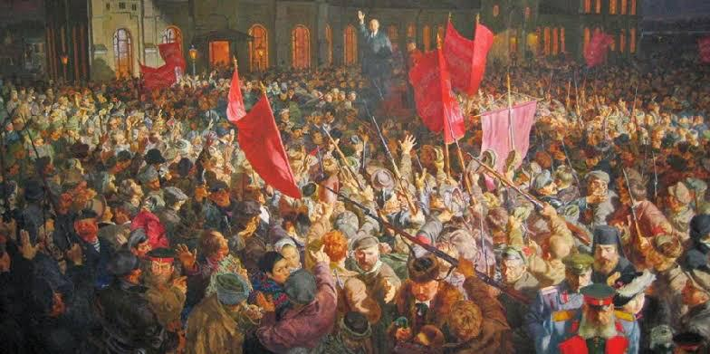
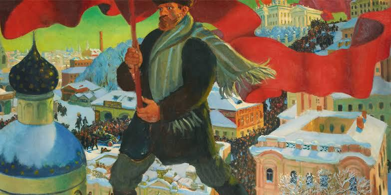

Consequências da revolução russa na arte:
A Revolução Russa teve um impacto significativo na arte, especialmente no início do século XX. O movimento artístico mais notável que surgiu após a revolução foi o Construtivismo, que buscava incorporar os princípios da revolução socialista na arte e na arquitetura. O Construtivismo enfatizava a utilidade social da arte e a criação de obras que servissem ao povo e à sociedade.
Além disso, a Revolução Russa também influenciou o movimento de arte chamado Suprematismo, liderado por Kazimir Malevich, que defendia a supremacia da forma geométrica pura e abstrata, desvinculada da representação figurativa. Entretanto, com o tempo, o governo soviético estabeleceu uma política oficial de arte, o Realismo Socialista, que exigia que a arte promovesse os ideais do regime comunista e retratasse a realidade socialista de maneira positiva. Essa política restringiu a liberdade criativa de muitos artistas e limitou a diversidade estética na União Soviética.
Apesar das restrições, a Revolução Russa ainda deixou um legado duradouro na arte, ao inspirar movimentos inovadores e abrindo espaço para novas abordagens estéticas e políticas. Essa liberdade garantida no campo artístico possibilitou o florescimento de várias organizações culturais autônomas e de uma série de editoras independentes, enquanto a postura do Narkomprost encorajava todas as formas de arte que não fossem abertamente hostis à revolução.
Entre março e outubro de 1917, estourava em território europeu uma série de conflitos que levariam à derrocada do absolutismo czarista e à ascensão do Partido Bolchevique, possibilitando o surgimento do primeiro governo socialista do mundo. Quer queira, quer não, a Revolução Russa é um dos acontecimentos mais determinantes para a história do século 20, influenciando não só os rumos da política mundial, mas também a cultura. É por essa importância que o centenário do movimento vem sendo relembrado em diversos países, inclusive, no Brasil.
Na capital pernambucana, nesta semana, a temática vem à tona em eventos promovidos pela Fundação Joaquim Nabuco (Fundaj) e pela Universidade Federal de Pernambuco (UFPE). O impacto da Revolução Russa não se limitou aos campos da política e da economia. As transformações empreendidas por Lênin, a partir de 1917, também tiveram reverberações nas mais diversas linguagens artísticas. O período histórico é retratado em obras clássicas, como no filme "Doutor Jivago" (1965), de David Lean, e no livro "A revolução dos bichos" (1945), de George Orwel. Além disso, é possível sentir a presença dos ideais revolucionários nos princípios estéticos adotados por vários artistas.
As consequências da Revolução Russa na arte foram profundas e abrangentes. Algumas das principais consequências incluem: